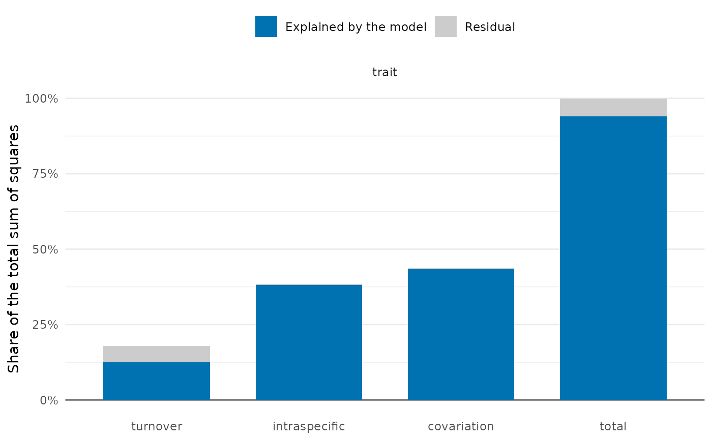

Intraspecific variability and species turnover in community trait means
Source:R/trait_variation.R
trait_flex.RdSplits the variation among sites of the community-weighted mean of a trait into the parts due to species turnover, to intraspecific variability and to their covariation, following Lepš et al. (2011), from the trait values of individuals.
Usage
trait_flex(
individuals,
traits = "trait",
site = "site",
species = "species",
abundance = NULL,
formula = ~1,
env = NULL
)Arguments
- individuals
Data frame with one row per individual.
- traits
Names of the columns with trait values.
- site, species
Names of the columns with the site and the species.
- abundance
Name of a column with the abundance of each population (the same value for all its individuals), or
NULLto weight by the number of individuals measured.- formula
One-sided formula with variables of
env, with an intercept;~ 1(the default) gives the total sums of squares only. With several terms,explainedis the sum of squares of the whole model andpthe p-value of its F test.- env
Data frame with one row per site, a column named like
siteand the variables offormula; it is matched to the sites by name. Sites with missing values in these variables are left out of all sums of squares, with a warning.
Value
A list with decomposition, a data frame with one row per trait and component
(turnover, intraspecific, covariation, total) and the columns explained,
residual, total (sums of squares) and p (of the regression, NA for the
covariation and without a model), and sites, a data frame with the specific and fixed
means and their difference for each site and trait. The list has class trait_flex,
with a plot() method.
Details
At each site, the "specific" mean weights the mean trait of each population (a species at
the site) by its abundance, and the "fixed" mean weights the mean of the species over all
individuals in the data by the same abundances. Their difference is the part of the
community mean due to intraspecific variability. The sums of squares among sites of the
specific mean (total), of the fixed mean (turnover) and of the difference (intraspecific)
are related by
$$SS_{total} = SS_{turnover} + SS_{intraspecific} + SS_{covariation};$$
a positive
covariation means that turnover and intraspecific variability move the community mean the
same way. With a formula, each of the three site means is regressed on the variables of
env, and the sums of squares are split into the parts explained by the model and the
residuals, with the p-value of each regression.
Abundances are those of the abundance column when given (one value per population, as in
sample_individuals()), otherwise the number of individuals measured. Individuals with a
missing trait value are left out of the population means, the species means and the counts
of that trait together, so that both community means use the same populations and weights.
References
Lepš, J., de Bello, F., Šmilauer, P., & Doležal, J. (2011). Community trait response to environment: disentangling species turnover vs intraspecific trait variability effects. Ecography, 34, 856–863. doi:10.1111/j.1600-0587.2010.06904.x
See also
Other trait variation among individuals:
community_index(),
neighbour_metrics,
nested_variance(),
null_intervals(),
plot.mc_trait_gradient(),
plot.nested_variance(),
plot.trait_flex(),
plot.trait_rarefaction(),
plot.tstats(),
plot_population_traits(),
population_shifts(),
sample_individuals(),
subsample_individuals(),
trait_densities(),
trait_gradient(),
trait_gradient_bayes(),
trait_gradient_phylo(),
trait_gradient_test(),
trait_gradient_weights(),
trait_rarefaction(),
tstats(),
tstats_summary()
Examples
set.seed(1)
ind <- data.frame(site = rep(paste0("s", 1:6), each = 20),
species = sample(c("a", "b", "c"), 120, replace = TRUE))
env <- data.frame(site = paste0("s", 1:6), moisture = 1:6)
ind$trait <- c(a = 10, b = 20, c = 30)[ind$species] +
env$moisture[match(ind$site, env$site)] + rnorm(120)
res <- trait_flex(ind, formula = ~ moisture, env = env)
res$decomposition
#> trait component explained residual total p
#> 1 trait turnover 5.629562 2.43805361 8.067616 3.843592e-02
#> 2 trait intraspecific 17.195890 0.14776307 17.343653 2.729729e-05
#> 3 trait covariation 19.677940 0.08327175 19.761212 NA
#> 4 trait total 42.503393 2.66908843 45.172481 1.335888e-03
if (requireNamespace("ggplot2", quietly = TRUE)) plot(res)
